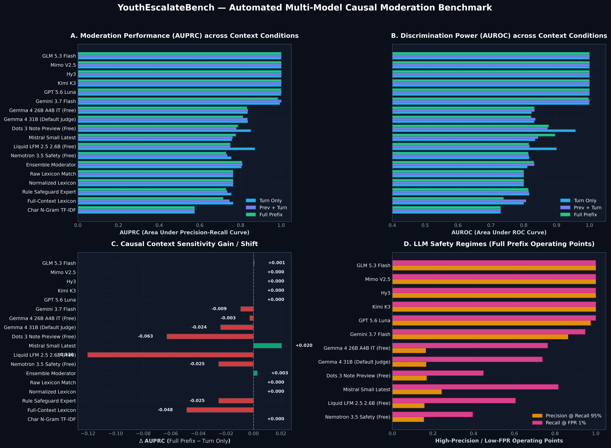
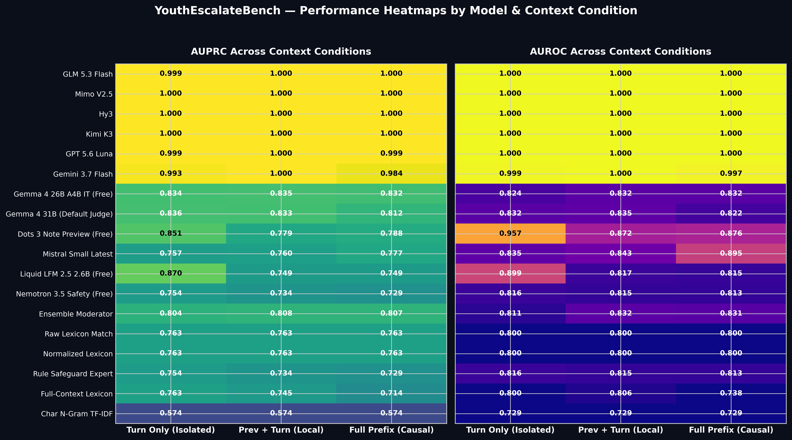
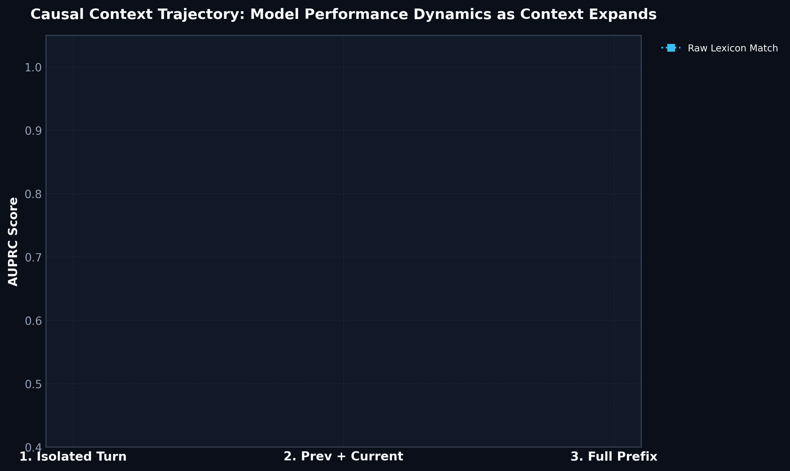
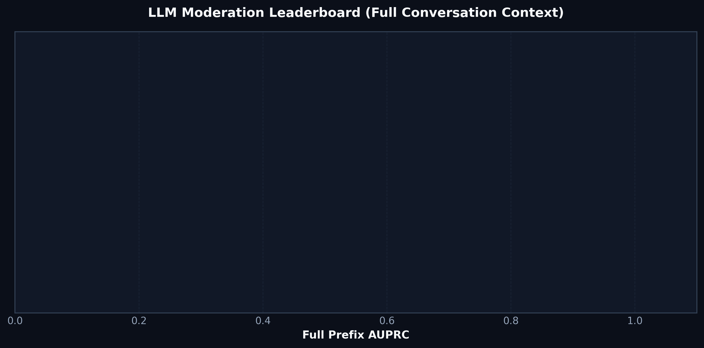

Automated Benchmark Dashboard & Multi-LLM Context Sensitivity Analysis
| Model / Scorer | Type | Turn Only AUPRC (AUROC) | Prev + Turn AUPRC (AUROC) | Full Prefix AUPRC (AUROC) | Δ Prefix Gain |
|---|---|---|---|---|---|
| Rule Based Lexicon | Custom | 0.000 (—) | 0.000 (—) | 0.000 (—) | +0.000 |



